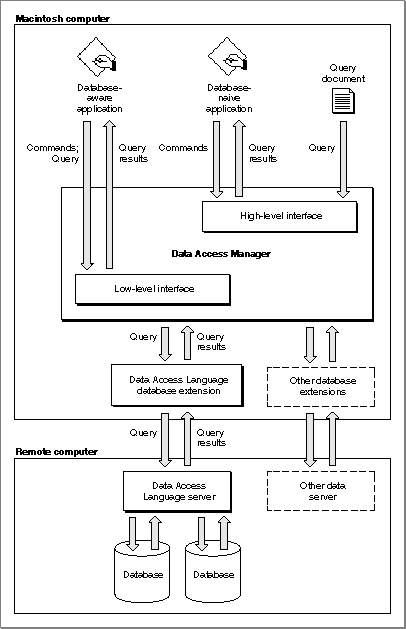

About the Data Access Manager
The Data Access Manager constitutes a standard interface that allows Macintosh applications to communicate with any number of databases or other data sources through a variety of data servers. As used in this chapter, a data server is the application that acts as an interface between the database extension on the Macintosh computer and the data source, which can be on the Macintosh computer or on a remote host computer. A data server can be a database server program, such as a Data Access Language server, which can provide an interface to a variety of different databases, or it can be the data source itself, such as a Macintosh application.The Data Access Manager has two application interfaces: the high-level interface and the low-level interface. If the proper database extension and query documents are available in the user's system, you can use the high-level interface to communicate with a data source without having any knowledge of the command language that the data server uses. Even if you use the low-level interface, your application can isolate the user from any specific knowledge of the data source or the data server's command language.
This section presents an overview and description of the Data Access Manager, including diagrams and conceptual descriptions of the components and processes involved in using the high-level and low-level interfaces. Next, "Using the Data Access Manager" beginning on page 12-12 includes descriptions, flowcharts, and program fragments that provide a step-by-step guide to the use of the high-level and low-level interfaces. "Creating a Query Document" beginning on page 12-47 describes the contents and function of a query document. You do not have to read this section unless you are writing an application that creates query documents, although if you are using the high-level interface you might be interested to know just how a query document works.
Figure 12-1 illustrates connections between Macintosh applications and a database on a remote computer. The arrows in Figure 12-1 show the flow of information, not the paths of commands or control signals. See Figure 12-2 on page 12-8 and Figure 12-3 on page 12-10 for the sequences involved in sending and retrieving data.
Figure 12-1 A connection with a database

Subtopics
- The High-Level Interface
- The Low-Level Interface
- Comparison of the High-Level and Low-Level Interfaces